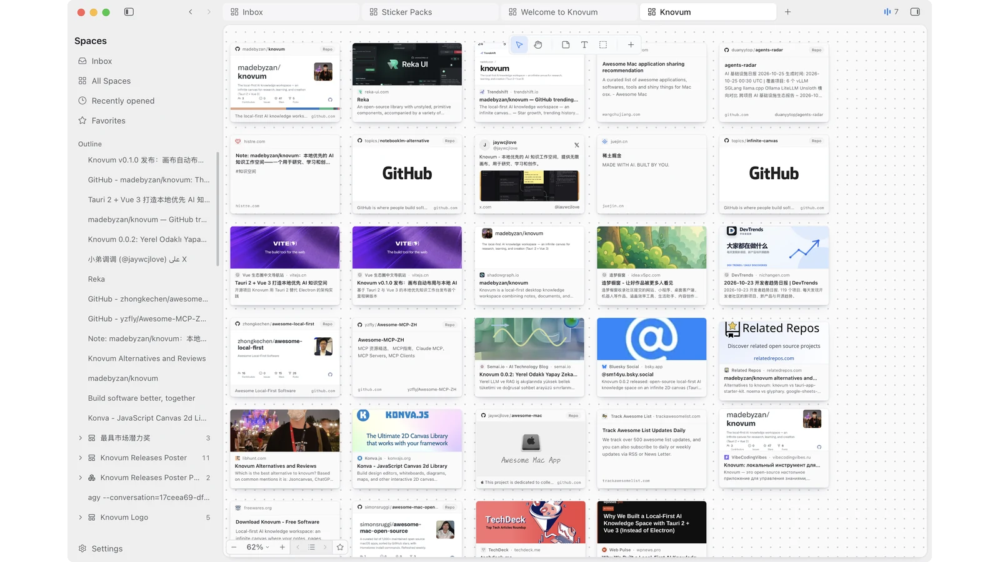

知识优先
AI 是一种能力，而不是产品的身份。先从资料和人真正想完成的事情出发。
为重要的思考与创作，留一处从容的空间。
查看最新版本
我们为什么这样做
研究与创作很少沿着一条直线前进。资料来自不同地方，形式各不相同；随着证据积累，想法也会改变。真正有用的成果，应该保留它与原始材料之间的联系。
Knovum 希望为这个过程提供一个长期的归属：由你掌控，并随着你关心的问题不断生长。
我们坚持的原则
AI 是一种能力，而不是产品的身份。先从资料和人真正想完成的事情出发。
来源、版本与关系应该可以检查。一个成果不应该与它的形成过程脱节。
知识资料库采用本地优先架构。使用外部模型是一个有明确服务商边界的选择。
Knovum 是基于 MIT 许可证的开源软件。格式和集成应帮助知识保持可迁移。
产品背后的技术
向社区开放
Knovum 基于 MIT 许可证发布。你可以阅读代码、探索文档、反馈问题，或贡献一项具体改进。